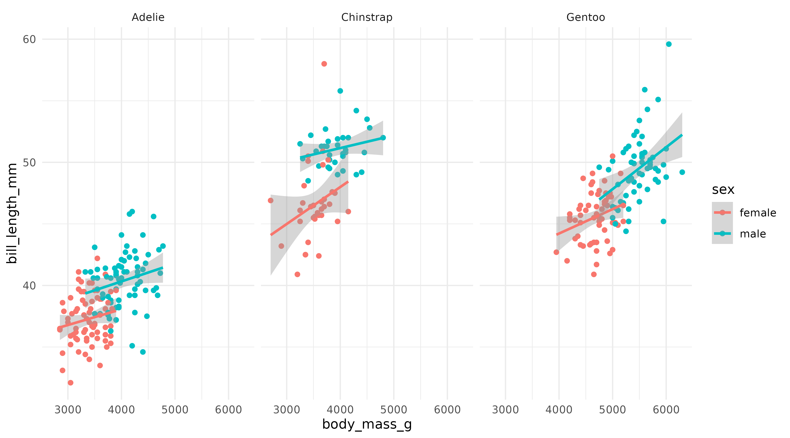
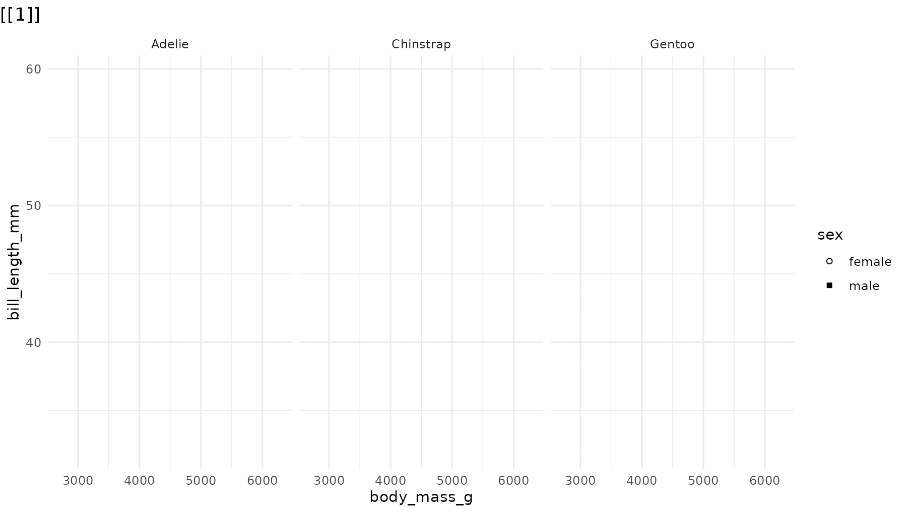
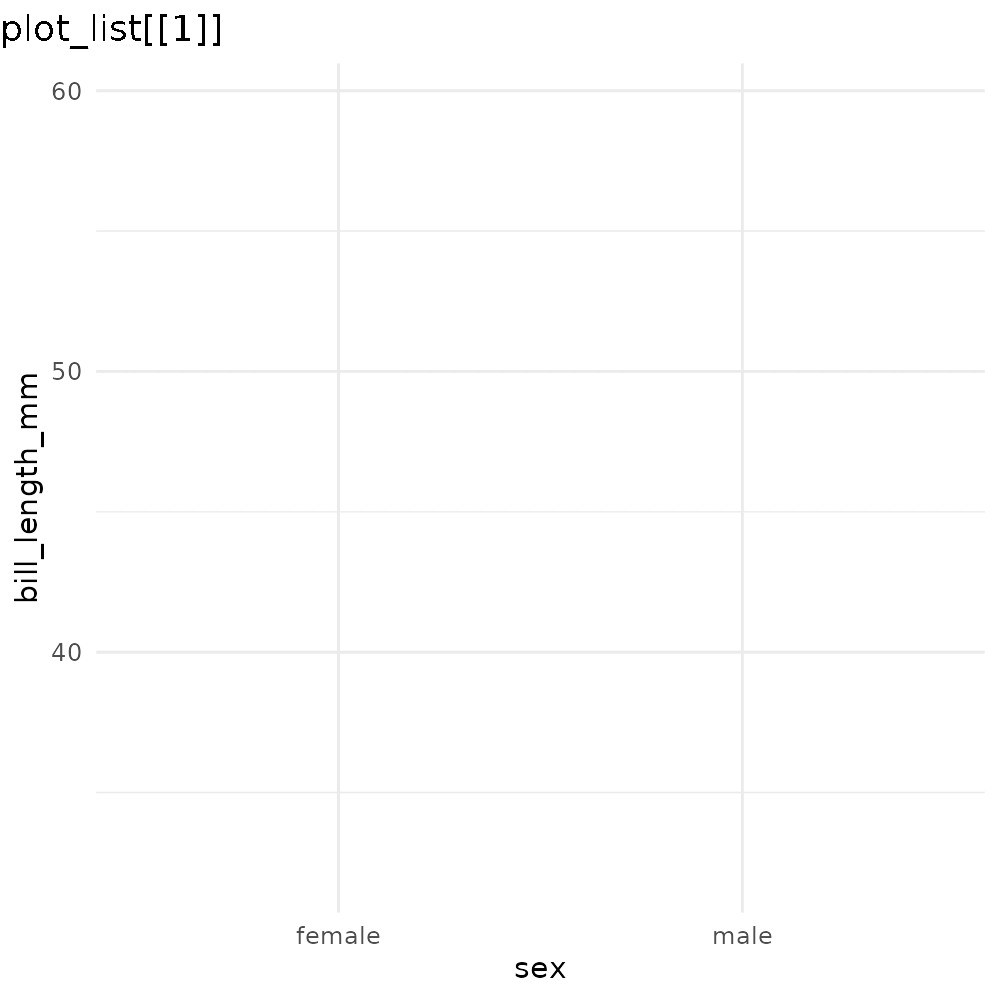

The goal of ggreveal is to make it easy to incrementally show parts of a ggplot. The package offers different ways to split a finished plot into steps.
Basic usage
Let’s create a plot that can can illustrate different ways to reveal
elements. We are using the penguins dataset from the
palmerpenguins package, which contains measurements of
penguins from three different species.
library(palmerpenguins)
library(ggplot2)
p1 <- ggplot(penguins[!is.na(penguins$sex),],
aes(body_mass_g, bill_length_mm,
group=sex, color=sex)) +
geom_point() +
geom_smooth(method="lm", formula = 'y ~ x', linewidth=1) +
facet_wrap(~species) +
theme_minimal()
p1
We have a scatter plot of body mass vs bill length, colored by sex and faceted by species. On top of the points, we have linear regression lines for each combination of sex and species.
We might want to reveal it by sex. In this case, sex is mapped to
both the group and color aesthetics. So we can
use either of those aesthetics with reveal_aes().
# For this plot, these are equivalent:
plot_list <- reveal_aes(p1, "color")
plot_list <- reveal_aes(p1, "group")
plot_list <- reveal_groups(p1) # wrapper for reveal_aes(p1, "group") Which produces a list of 3 plots:
Note: ggreveal does not produce animations. The functions return a list of plots, which are shown here in animated gifs for sake of concision.
Alternatively, we might want to focus on comparing the three species, and thus reveal each panel (facet) at a time:
plot_list <- reveal_panels(p1)
plot_list
Finally, we might want to focus on the raw data and then highlight the regression lines at the end. In this case, we can reveal the layers one at a time:
plot_list <- reveal_layers(p1)
plot_list